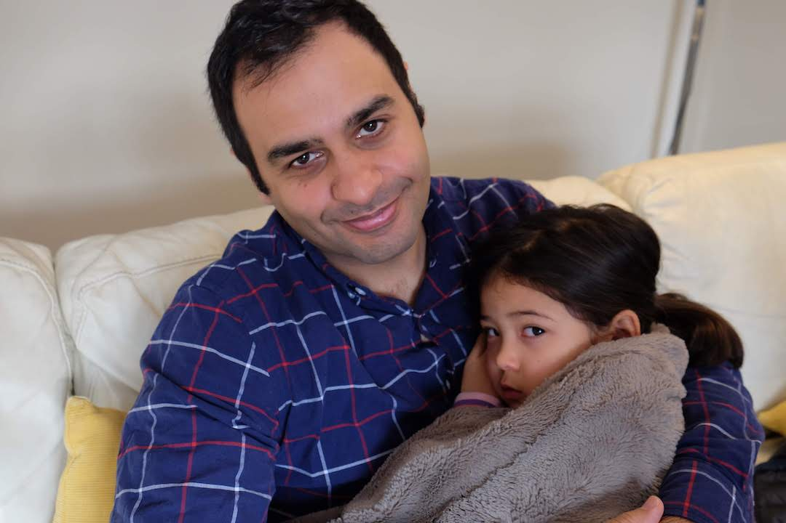
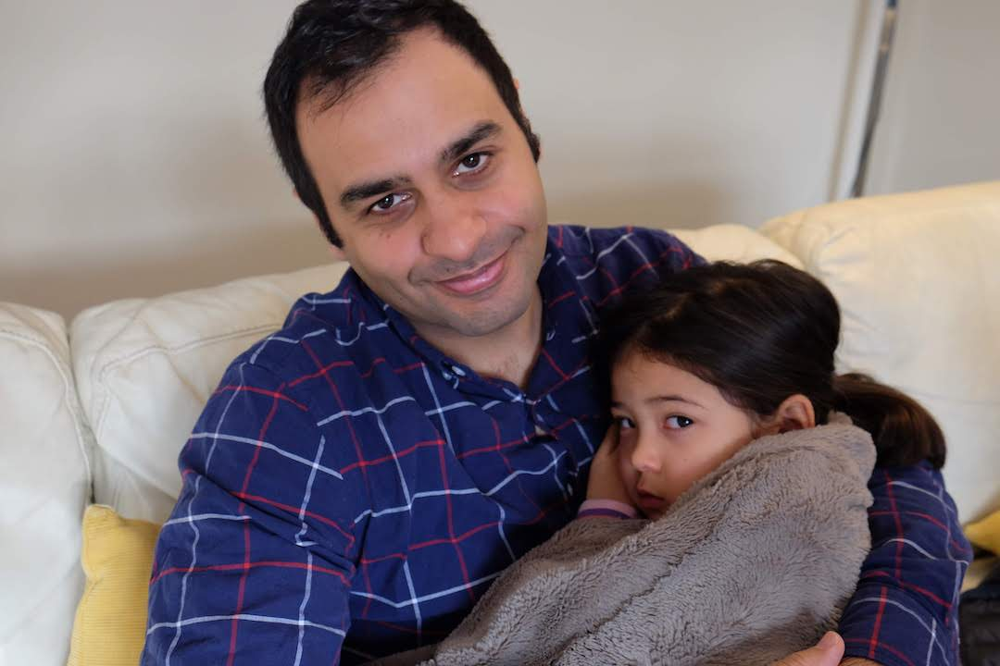
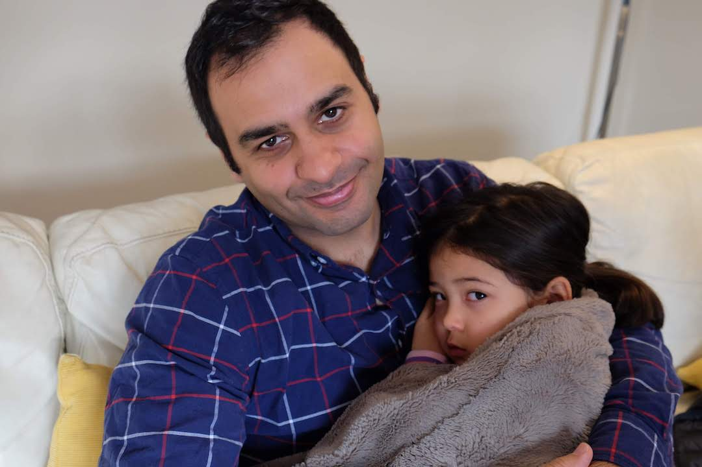
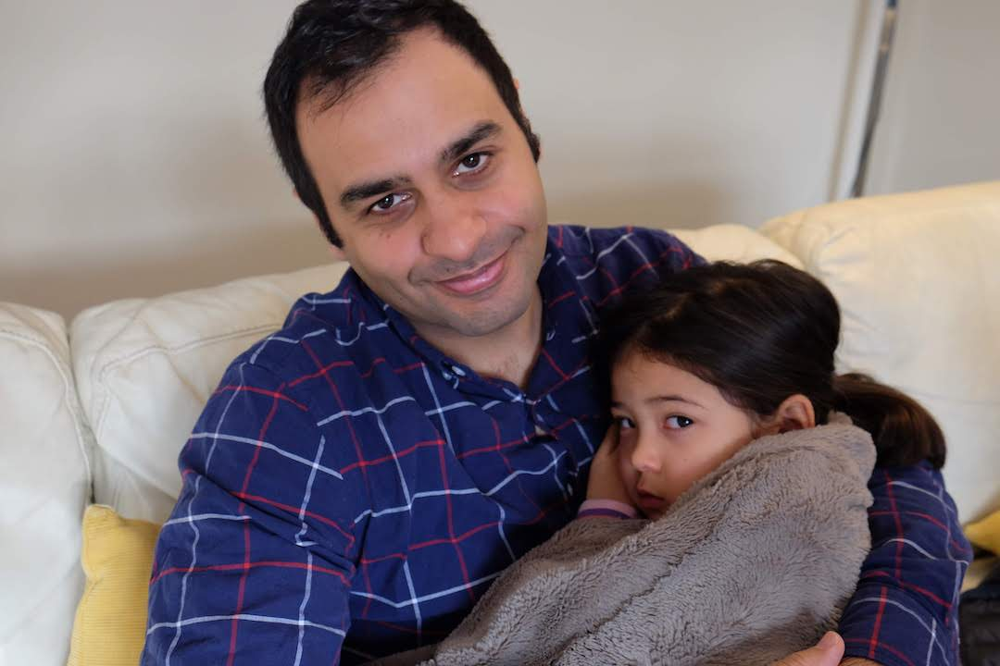

 

I've cofounded two startups. The most recent Streak.com went through YC in Summer of 2011 and is now generating millions in revenue a year and has a team of 35 fantastic people. Hopefully one day it will be a multi-billion dollar company.
I left Streak in March of 2019. After 14 years of "The Founder Life" I decided to move back to my home town of Waterloo, Ontario and spend more time with family.
I'm still figuring out exactly what I want to do, but it should leverage the experience I've gained over the past decade and a half, this includes:
If I sound like someone that would bring a lot of value to you or your organization then please shoot me an email hi@omar.dev
My LinkedIn